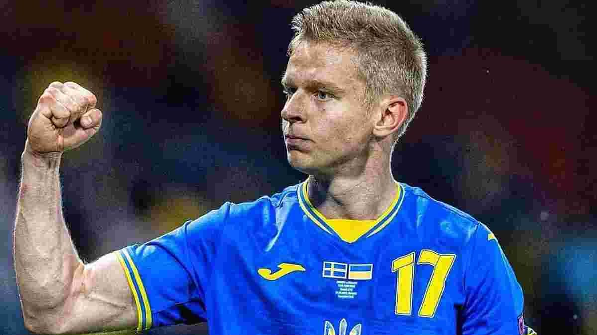

Для когось виклик в збірну - честь, а для когось спроба відпочити й подивитись футбол по телевізору. І це не про Ракицького,
якого не викликали у головну команду країни, а про Коноплю, який відмовився туди їхати. Річ у тім, що після крайнього матчу Шахтаря у Лізі
Європи Юхим подзвонив Ротаню і сказав, що його вже довгий час турбують м’язи паху. Ротань виключив гірника зі складу збірної, а той вийшов на
цілий другий тайм проти Руху. «Сьогодні був важливий матч (проти Руху), тому відіграв на уколі» - сказав Конопля. Тобто матч чемпіонату України
проти аутсайдера є важливішим ніж матч збірної на Вемблі? А буде виправдання: «дав шанс Мірошниченку отримати перший виклик в збірну, бо він це
заслужив»? Конопля може бути не єдиний для кого клубні питання в пріоритеті. Є гравці, які теж могли б скористатися перервою на збірні задля своїх інтересів.
Олександр Зінченко

Зінченко завжди приїжджає в збірну України з особливим ентузіазмом. Захищати кольори збірної для нього пошана. Олександр є прикладом для молодих українських гравців і одним з лідерів у роздягальні. Навіть, забрав звання найкращого жартівника збірної у Коноплянки, коли той був у відпустці. Можна сміливо сказати, що Зінченко буде наступним капітаном української команди після відходу Ярмоленка. Попри те, що Сашку, щоб приєднатись до партнерів в Лондоні, потрібно було проїхати всього декілька автобусних зупинок, він міг теж зателефонувати Ротаню з проханням не викликати його в збірну. На це є декілька причин. Арсенал активно бореться за чемпіонство в Англії. Зінченко є одним з ключових гравців у цій боротьбі. Перерва клубного футболу на збірні могла б допомогти українцю зібратись з думками й дозволити Артеті без перешкод награвати Зінченка у своїх напрацюваннях. Також головною причиною залишитись вдома могли стати фани Арсенала, які під час матчів збірних автоматично стають вболівальниками своєї країни. Тобто, Сашко не буде їх улюбленцем на Вемблі, і має всі шанси розчарувати своїх фанів голом або
гольовим пасом, що може сильно вплинути на їх подальші взаємними.
Анатолій Трубін
Голкіпер Шахтаря беззаперечно є головним претендентом на місце в стартовому складі на Вемблі. З повагою до всіх воротарів збірної, але скласти конкуренцію Трубіну у воротах зараз неможливо: Лунін дивитись як грає Куртуа, П’ятов дивиться як грає Трубін, Різник травмувався і теж дивиться як грає Трубін, а Микита Шевченко, попри асисти суперникам, не дотягує до рівня збірної. Тому в української футбольної спільноти виникне багато запитань до керманича збірної, якщо той не поставить Анатолія в стартовий склад. Гра проти Ренна показала, що Трубін не ламається психологічно у складні моменти. Навіть, під час серії пенальті у нього є козир на пляшці з водою. Але матч проти Феєнорда міг все змінити. До цього Трубін був свідком 7-ми голів, коли дивився, як воротар Металіста-1925 Сидоренко виймав м’яч з сітки раз за разом, але в Нідерландах сам був змушений виконувати цю чорнову роботу. Це могло здорово вдарити по Анатолію, і він міг зателефонувати Ротаню й попросити його виключити його зі складу збірної через фобію щоразу пропускати багато голів на міжнародній арені. А це може вплинути на його ціну,
що не вигідно для Шахтаря.
Євген Коноплянка
Якщо Зінченко і Трубін тільки могли б подзвонити до Ротаня, то складається враження, що Коноплянка точно дзвонив. Схоже пообіцяв хороший могорич колишньому партнеру, бо ніхто крім самого в.о збірної не розуміє: навіщо Євген знадобився Ротаню на Вемблі? Колишній тренер київського Динамо Олександр Хацкевич поділився своїми емоціями щодо
виклику Коно в збірну:
"Я за грою Коноплянки не стежу вже давно, але мене цей вибір Ротаня дуже здивував. Не знаю, чи був цей виклик узгоджений з Ребровим, УАФ чи це особистий вибір Ротаня, але якщо брати статистику Коноплянки, то я не розумію, за які заслуги він сьогодні викликається до збірної. Деякі футболісти із цієї збірної України навіть
не знайомі з Коноплянкою".
І справді, Коноплянка зовсім не запалює в чемпіонаті Польщі й зрозуміти рішення Ротаня досить складно. Але вся відповідальність на ньому і йому відповідати за
результат.
А ось Коноплянка, прочитавши думки експертів і коментарі в соціальних мереж міг би зрозуміти, що недопрацював на виклик в збірну. Таким чином, він міг зателефонувати Ротаню і відмовитися від запрошення, для того, щоб в матчах за Краковію довести свій рівень і пізніше вже закономірно бути викликаним у
збірну України.
Андрій Ярмоленко
«Вчора на коні, сьогодні під конем» - приблизно так можна описати кар’єру Ярмоленка після відходу з київського Динамо. Але в національній збірній Андрій завжди їздить верхи. Тут в нього гарантований стартовий склад, полювання на рекорди й трон лідерства. Виявляється Аль-Айн не відпускає в збірні тільки одного українця, а не всіх. Ярмоленко поїхав на «заробітки» до Реброва на початку сезону. Для адаптації був потрібен час. І ось з початку нового року Ярмоленко нарешті відчув смак частих голів. Можливо, на нього вплинув факт, що скоро потрібно буде повертатись в Лондон і показати «колишній», що є ще порох. Але що робити з «теперішньою»? Останні 4 матчі за клуб Ярмоленко пропустив через травму. Тобто, місця в складі для Андрія зараз немає. Замість того, щоб боротися за нього - поїхав у столицю Англії. Вболівальники прекрасно розуміють, що Ярмола полюбляє більше грати в збірній, а в клубі дивитись футбол з м’якого крісла, але колись ж потрібно почати залізно бути основним. Якщо українець не збирається влітку повертатись в Динамо, то найкращим його рішенням після виклику у збірну було б зателефонувати Реброву, щоб той зателефонував Ротаню і попросив виключити Ярмоленка зі складу збірної. Таким чином, Андрій ще й б висловить підтримку
Сергію Станіславовичу.
Андрій Павлечко